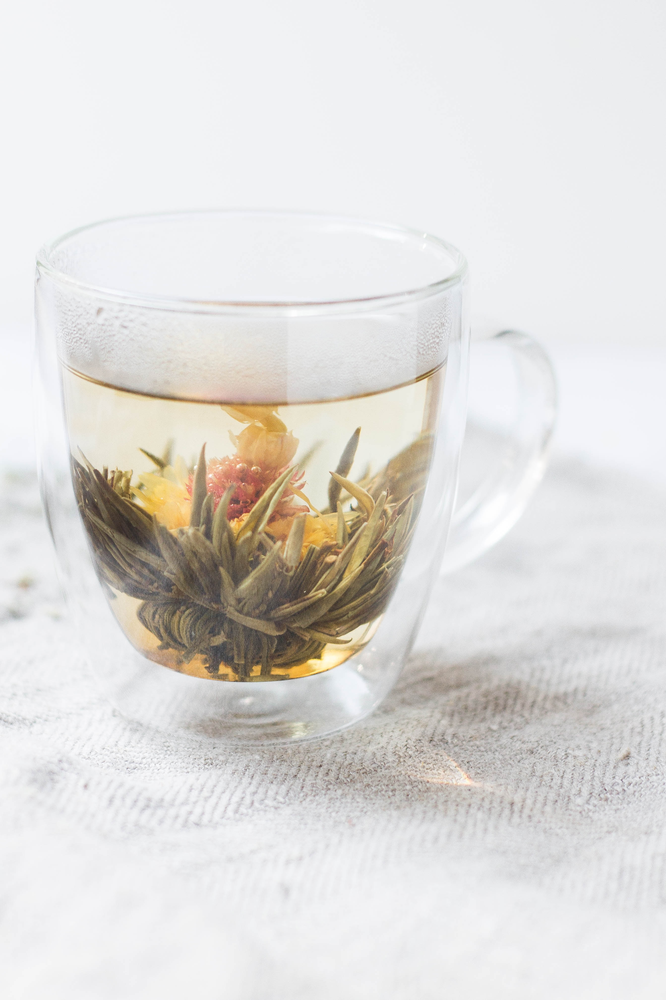

Green tea with strawberry & peach
Ingredients
- 2 tsp green whole leaf tea
- 4 strawberries, sliced (you don’t have to hull them first)
- ½ peach, sliced
- Pour 150ml cold water into a large heatproof jug then top up with 450ml boiling water. Add the tea leaves and sliced fruit and leave to steep for 2 mins
- Meanwhile, fill your teapot with boiling water to warm it. Once the tea has steeped, pour away the water in the teapot then strain the green tea into the teapot, leaving the fruit and tea leaves behind.You can re-brew this mixture again for another pot if you like. Garnish with extra fruit slices if you like.